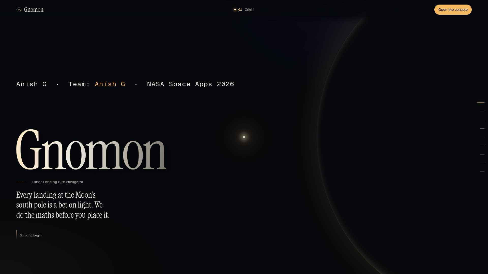
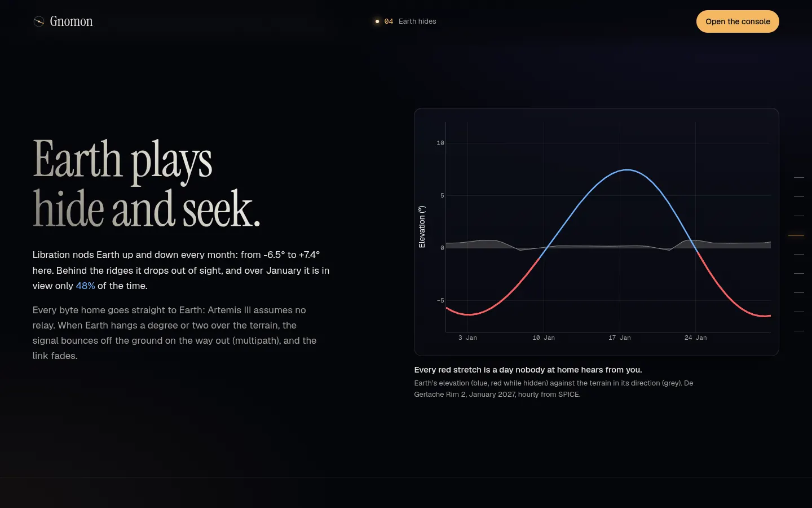
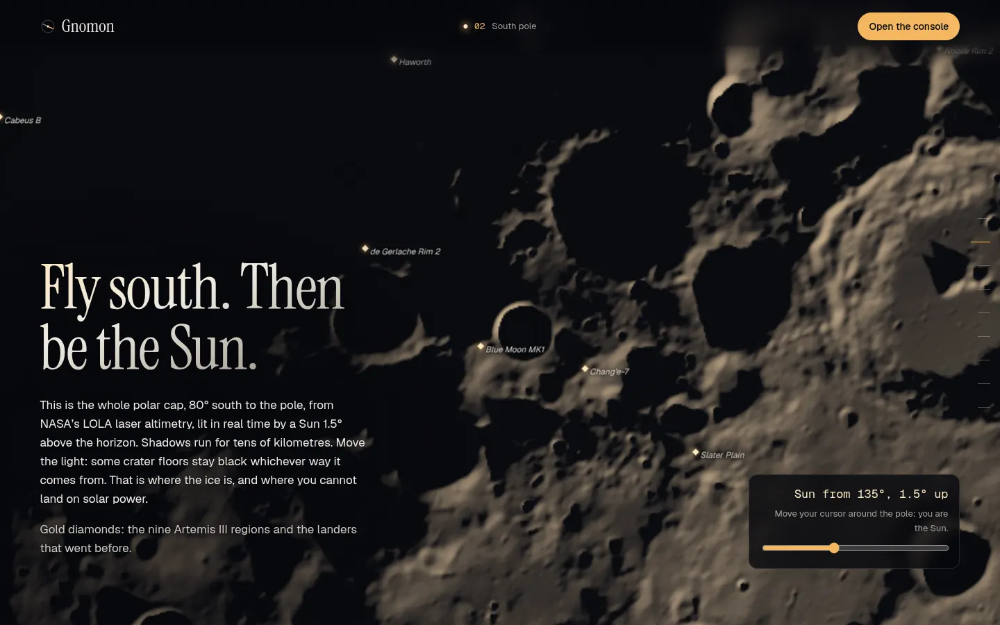
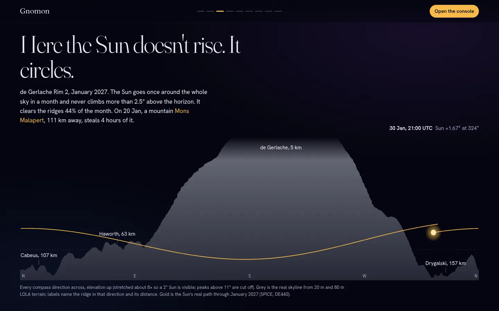
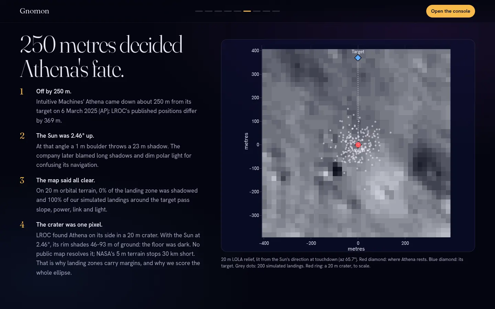
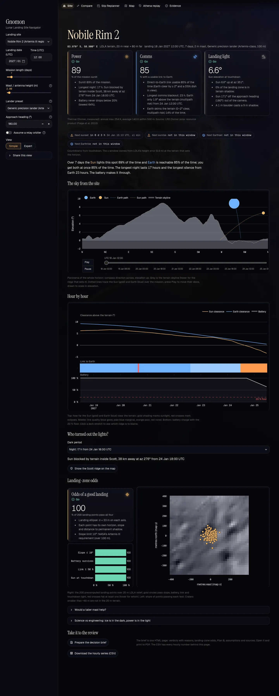
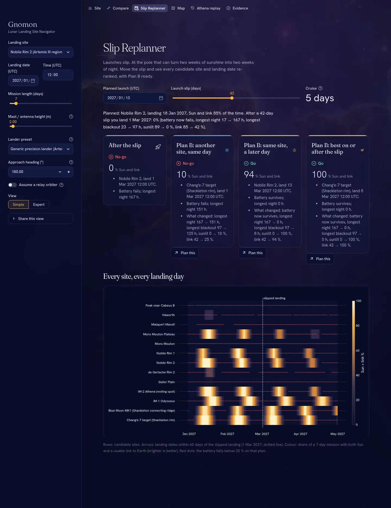

Challenge: Lunar Landing Site Navigator
01 · The problem

Earth plays hide and seek: de Gerlache Rim 2, January 2027, hourly from NASA SPICE. Red: no line of sight home.
02 · Be the Sun

The whole polar cap, 80°S to the pole (NASA LOLA), relit live in WebGL by a Sun 1.5° up. Your cursor is the Sun.

The Sun's real path (SPICE DE440) over the real skyline at de Gerlache Rim 2: lit 44% of January 2027. On 20 Jan Mons Malapert, 111 km away at az 94°, steals 4 hours.
03 · Hindsight: IM-2 Athena, 6 Mar 2025

Touchdown 17:28:50 UTC, Sun 2.5° up at az 66°. Our replay at LROC's resting spot.
04 · The mission console

Site: Power, Comms and Landing-light verdicts with reasons, countdowns to sunset and Earthset, the sky panorama, "blame the ridge", and odds over 200 simulated landings.

Slip Replanner: a 42-day slip turns 85% Sun-and-link into 0%; every site and landing day is re-ranked, with Plan B cards and "what changed".
05 · Validation
The one outlier, Peak near Cabeus B, is explained by our finer 20 m near-field terrain. Comm thresholds and lander power numbers are illustrative and labelled so. Known limits: docs/METHOD.md.
06 · Built on open data and open code
Story site
anish-185.github.io/lunar-landing-site-navigator
Mission console
gnomon-moon.streamlit.app